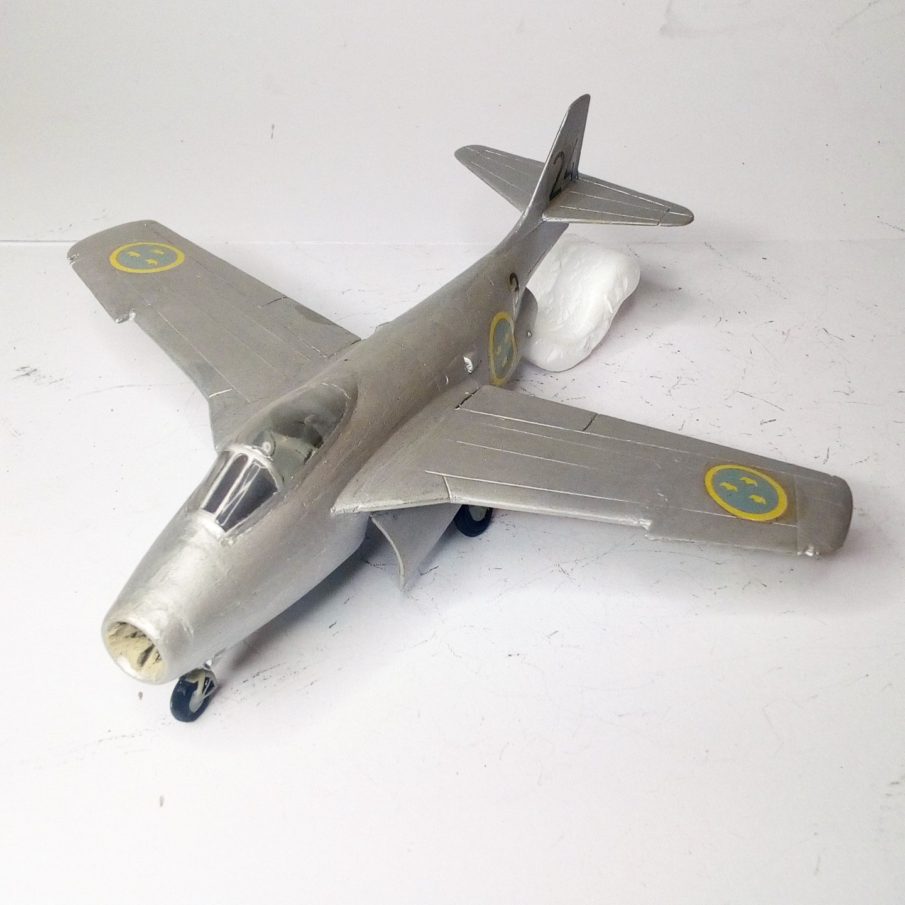
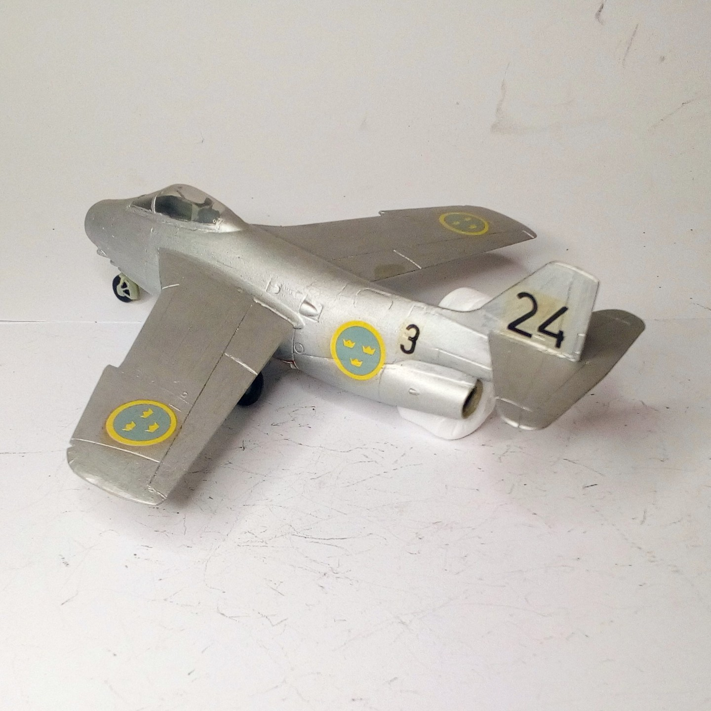

Aerei · scale model archive
SAAB J-29 F Tunnan
SAAB J-29 F Tunnan — Kit: Matchbox, Scale: 1/72. Typical post war fighter design, owing a lot from german designs #1/72 #Matchbox #SAABJ29

Photo gallery

English description
Typical post war fighter design, owing a lot from german designs
#1/72 #Matchbox #SAABJ29
Descrizione italiana
Tipico progetto di caccia del dopoguerra, molto debitore ai progetti tedeschi. #1/72 #Matchbox #SAABJ29